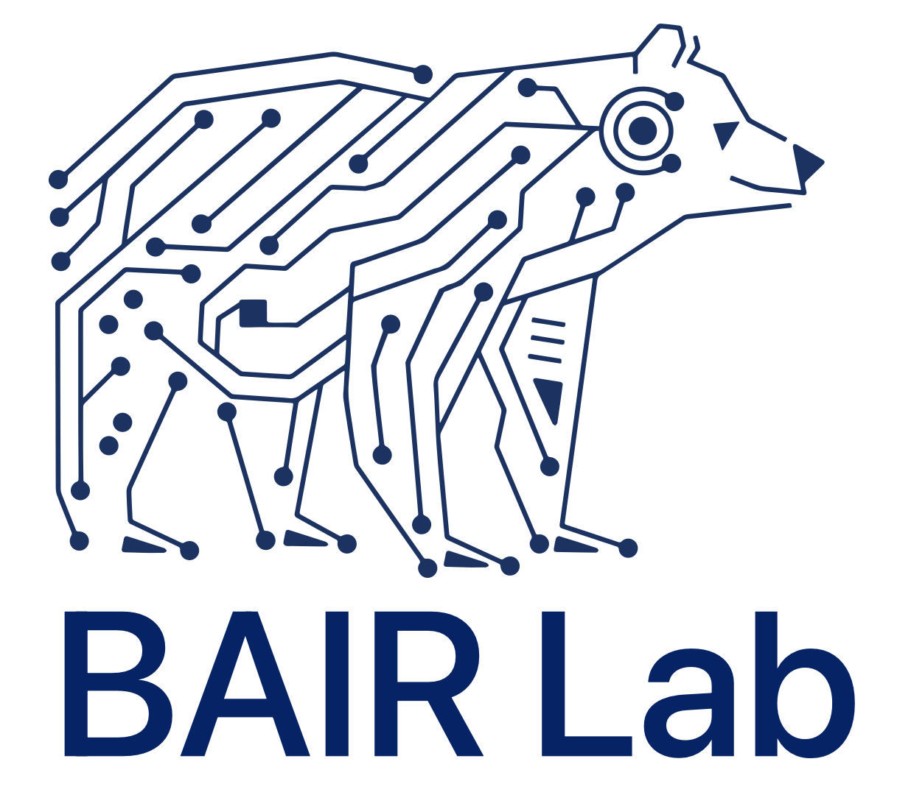
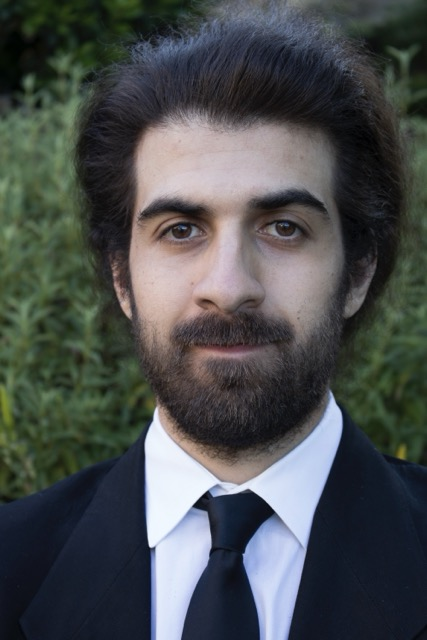
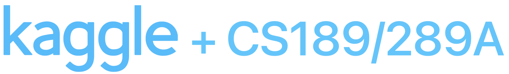
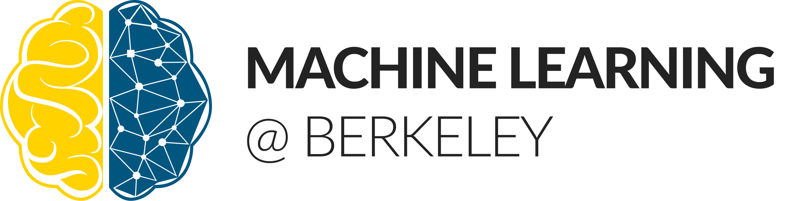
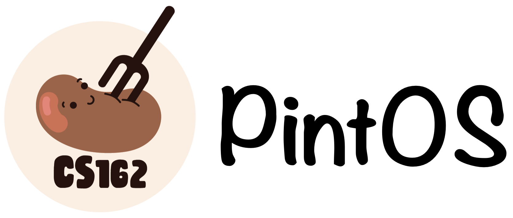
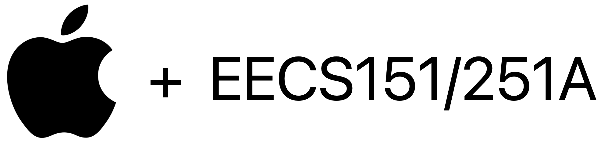

Fall 2026

Implemented a hierarchical summarization system to improve LLM responses on long-form documents, using vLLM and Llama 3.
USC M.S. student interested in machine learning and computer systems.
Updated:

Implemented a hierarchical summarization system to improve LLM responses on long-form documents, using vLLM and Llama 3.
Received the CS189/289A Top Kaggle Performance Cumulative Score.
Participated in an advanced EECS group study on deep learning for images, building ResNet, YOLO, Vision Transformer, and diffusion models in PyTorch.
Implemented parts of PintOS kernel, namely:
Achieved the lowest CPI in the EECS151/251A Apple Design Contest.